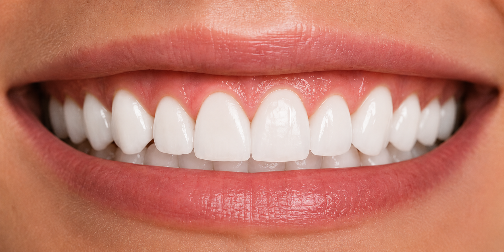
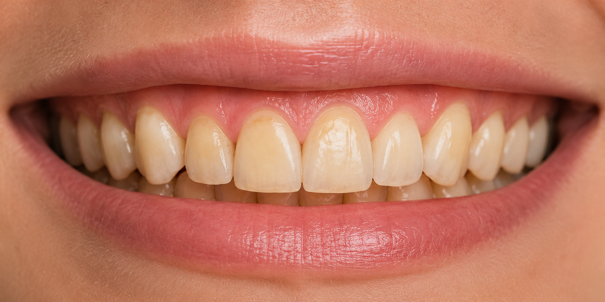

Preciznost koja se vidi
Rezultati koji govore
sami za sebe.
Pogledajte transformacije koje vraćaju osmeh i samopouzdanje.

POSLE
'"/>

PRE
'"/>
PRE
POSLE
01 / 05
01 / 01
Vrhunska estetika
Prirodni izgled koji se savršeno uklapa.
Mikronska preciznost
Digitalni workflow za savršeno pristajanje.
Dugotrajnost
Materijali najviše kvaliteta i proverene izdržljivosti.
Poverenje pacijenata
Hiljade zadovoljnih pacijenata i novi osmesi svaki dan.